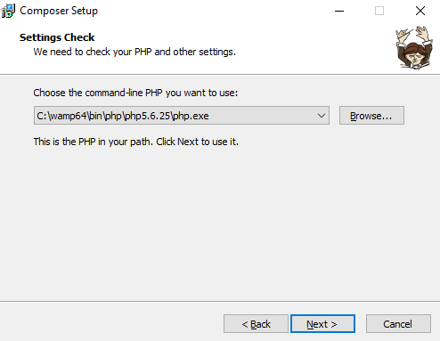
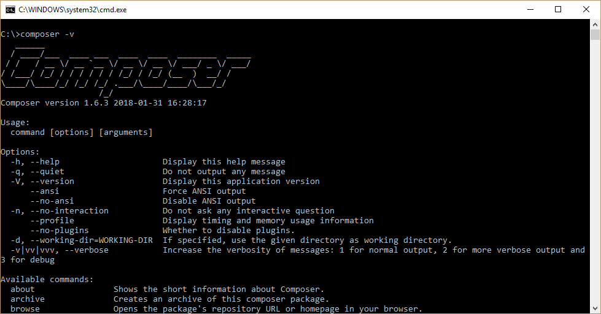
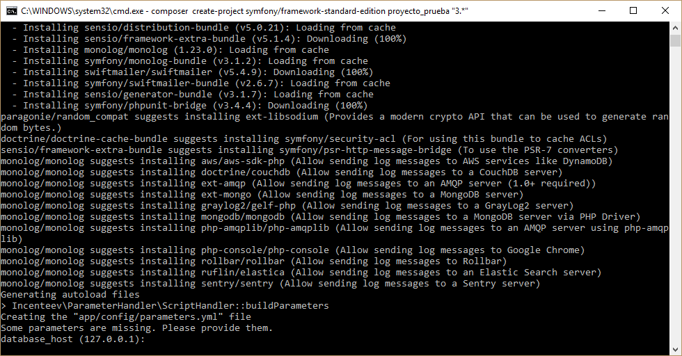
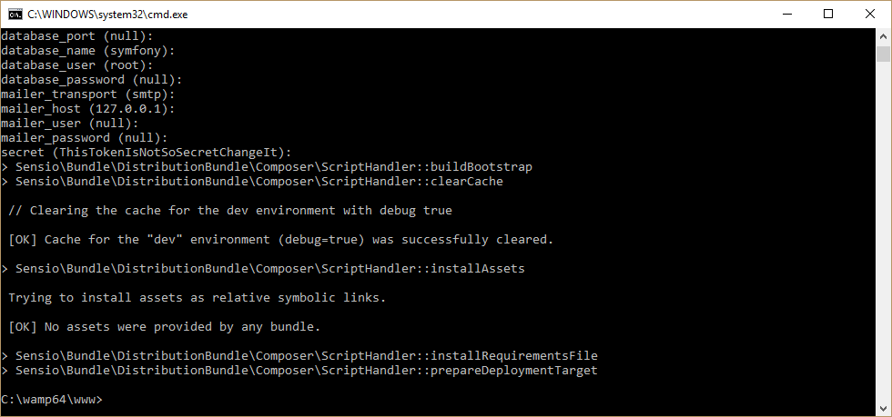

Primero imagínalo, luego prográmalo
Inauguración del Blog del Mayu
Bienvenido(a) a mi Blog, mi nombre es Cristhian Mayuri, desarrollador de software de nacionalidad peruana, mi experiencia en el mundo de la programación es de casi 10 años (la mayoría de ellos en una Institución del Estado en Perú).
Mi grado de instrucción es de Técnico en Computación e Informática.
Mi experiencia es amplia en PHP y mediana en Java, llegando a realizar sistemas administrativos de gran envergadura en el primero.
Actualmente estoy incursionando en el desarrollo para android, por lo que es bastante probable que dentro del blog publique algunas entradas interesantes acerca del tema.
Poco más queda por decir, salvo el hecho de que esta es mi primera experiencia publicando contenido para la comunidad de internet y espero estar a la altura de las expectativas.
Configuración de Proyecto Symfony
Hola de nuevo, como comente en el post de inauguración mi experiencia radica más que todo en el uso del lenguaje PHP, habiendo dicho esto comencemos.
Hoy en día saber programar haciendo uso de un Framework PHP es lo más requerido por las empresas de desarrollo web, el día de hoy te presento la configuración rápida del Framework Symfony.
En la documentación oficial de Symfony, se nos proporciona una solución haciendo uso de Composer (esta es la que usaremos).
- Primero que nada requeriremos contar con un interprete PHP, para este fin te recomiendo instalar wamp (este es un software que nos configurará Apache, PHP y MySql de una sola vez).
- Hecho lo anterior debemos descargar
Composer. Este programa se encarga de administrar de manera muy efectiva librerías de PHP.
La instalación de Composer en Windows consiste en dar siguiente a la mayoría de pasos, salvo al
que nos pide que asignemos nuestro interprete de PHP, en donde de haber instalado wamp asignaremos:

Esta ruta puede cambiar en el directorio wamp que podría ser el de 32 bits en cuyo caso el nombre no llevaría 64 sino "wamp" a secas y también en la versión de PHP, que a partir de algunas versiones atrás ya incluye la versión 7.* de PHP (puedes asignar esta versión si deseas experimentar las características más recientes de PHP). - Para confirmar que Composer se ha instalado correctamente ejecutaremos el siguiente comando en la consola:
composer -v.
Obtendremos un resultado similar a este:

Pues bien, tenemos instalado wamp y composer, ahora procederemos a crear un Proyecto con Symfony. - Para instalar Symfony debemos ubicarnos a través de la consola en el directorio de publicación de wamp:
cd C:/wamp(64)/www
Una vez situados en la carpeta de publicación ejecutaremos el siguiente comando también en la consola:
composer create-project symfony/framework-standard-edition nombreproyecto "3.*"
Ahora procederé a detallar un poco que hace este comando:
- composer create-project: Se encarga de invocar la función de creación de proyectos de Composer.
- symfony/framework-standard-edition: Es el directorio que le decimos a Composer que tome como base.
- nombreproyecto: Es el nombre y a la vez directorio del proyecto que vamos a crear.
- "3.*": Es la versión de Symfony que instalaremos el asterisco después del punto indica que puede ser cualquier versión arriba de la 3, también se podría omitir escribir este fragmento de código y así se instalaría la versión más reciente.

Si haz realizado los pasos correctamente empezará la instalación del Framework Symfony, desde ya te aviso que la primera instalación toma su tiempo. Pasado un rato la consola te pedirá que ingreses los datos de configuración del proyecto. Ya que esto es una prueba dejaremos todo por defecto (dar al ENTER y dejar en blanco).

Y ya está, hemos creado nuestro proyecto con el Framework Symfony. Como dice el título del artículo he tratado de crear la guía del caso más simple. Si deseas ver algunos ejemplos de proyectos algo más complejos de Symfony, puedes seguirme en mi perfil de GitHub, espero te haya servido y hasta la próxima.